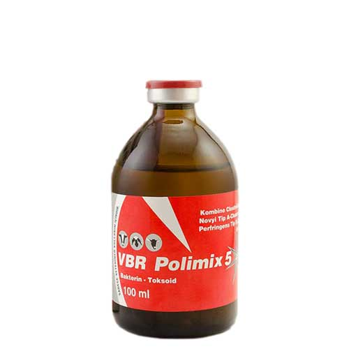

واکسن پلی والان کلستریدیایی، آتافن
📝ترکیبات:
کلستریدیوم نوو ی تیپ A
کلستریدیوم شاوئی
کلستریدیوم پرفرینجنس تیپ های B, C, D
📝موارد مصرف:
کلی میکس 5 برا ی ایجاد ایمنی در گوسفند و بز، گاو و گوساله، در مقابل بیماری ها ی ذیل استفاده می شود:
هپاتیت نکروزان ناشی از کلستریدیوم نوو ی
شاربن علامتی یا بلک لگ ناشی از کلستریدیوم شاوئی
آنتروتوکسمی ناشی از کلستریدیوم پرفرینجنس
دیسنتر ی بره ها ی شیرخوار ناشی از کلستریدیوم پرفرینجنس تیپ B
آنتریت هموراژیک و استراك ناشی از کلستریدیوم پرفرینجنس تیپ C
قلوه نرمی و بیمار ی پرخور ی ناشی از کلستریدیوم پرفرینجنس تیپ D
📝میزان تجویز و نحوه مصرف:
◽️گوسفند و بره، بز و بزغاله:
با سن بالاتر از 2 ماه، تزریق یک میلی لیتر از واکسن بشکل داخل عضلانی یا زیر پوستی در زیر بغل.
◽️گاو و گوساله:
با سن بالاتر از 3 ماه، تزریق دو میلی لیتر از واکسن بصورت داخل عضلانی یا زیر پوستی در قسمت گردن سمت چپ.
دام هایی که اولین بار واکسینه میشوند باید 3 الی 4 هفته بعد از تزریق اول به صورت تک دز مجددا واکسینه شده و پس از آن واکسیناسیون باید سالیانه تکرار گردد.
واکسیناسیون دام ها ی آبستن و شیرده بلامانـع می باشد.
📝موارد احتیاط:
صرفا دام ها ی سالم باید واکسینه شوند.
ویال واکسن قبل از مصرف خوب تکان داده شود.
در صورت بروز شوك آنافیلاکسی از آدرنالین و یا معادل آن استفاده شود.
📝زمان پرهیز از مصرف:
تا 28 روز پس از واکسیناسیون از مصرف گوشت دام خوددار ی شود.
📝شرایط نگهداری:
دور از نور مستقیم خورشید و در دما ی 2 تا 8 درجه سانتیگراد نگهدار ی شود.
از یخ زدن واکسن جلوگیر ی بعمل آید.
به محض باز شدن درب ویال، محتویات آن باید بطور کامل مصرف شود.
📝بسته بندی:
واکسن در ویال ها ی شیشه ای یا پلاستیکی با حجم50، 100 میلی لیتر ی عرضه می گردد.
📝عمر قفسه ای:
دو سال
📝شرکت سازنده:
شرکت آتافن کشور ترکیه